Autocorrelation Spectrum¶
Description¶
The Autocorrelation provides a useful description of a Vector Boolean function in relation to some cryptographic criteria. It is derived from the sequences of the component functions of the Vector Boolean function and does not uniquely determine the Vector Boolean function itself.
The directional derivative of  in the direction of
in the direction of  is defined as 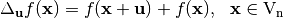.
is defined as 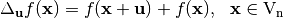.
Similarly, the directional derivative of the sequence of a Boolean function 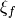 in the direction of is defined as: 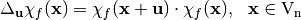.
The autocorrelation of with respect to the shift ,  , is defined by the Polarity Truth Table to be:
, is defined by the Polarity Truth Table to be:
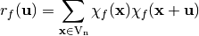
From this definition of the autocorrelation function we note two important properties:
- For every Boolean function 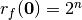, since 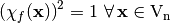.
- The value of 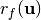 when 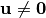 must be proportional to the correlation between 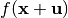 and 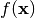, i.e.: 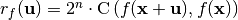.
The Aucorrelation Spectrum gives an indication of the imbalance of all first order derivatives of the component functions of a Vector Boolean function. As differential cryptanalysis exploits imbalanced derivatives of Vector Boolean functions, the Aucorrelation Spectrum is vital in the analysis.
- Autocorrelation Spectrum is denoted by :math:`matr{R}(F) in
- matr{M}_{2^n times 2^m}(bbbz)`. The columns of the matrix correspond to the Autocorrelation Spectrum of their component functions. The lower bound of the Autocorrelation Spectrum values is
 and the upper bound is
and the upper bound is  .
.
Linear structures¶
If the directional derivative of in the direction of :  is a constant function, then
is a constant function, then  is a linear structure of
is a linear structure of  [Lai:95] [Chaum:E85]. The zero vector
[Lai:95] [Chaum:E85]. The zero vector  is a trivial linear structure since 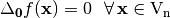. From the point of view of autocorrelation, a vector in
is a trivial linear structure since 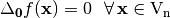. From the point of view of autocorrelation, a vector in  is a linear structure if it satisfies the following:
is a linear structure if it satisfies the following:
The vector is a linear structure of if and only if 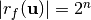.
The notion of linear structures can be extended for the case of Vector Boolean functions. The definition of a Vector Boolean function that has a linear structure was originally proposed by Chaum [Chaum:E85] and Evertse [Evertse:87]. They defined that a Vector Boolean function F has a linear structure by considering the existence of nontrivial linear structure in any of the component functions of F.
 is said to have a linear structure if there exists a nonzero vector together with a nonzero vector
is said to have a linear structure if there exists a nonzero vector together with a nonzero vector  such that 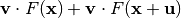 takes the same value 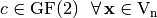.
such that 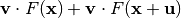 takes the same value 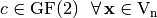.
is said to have a linear structure if there exists a nonzero vector together with a nonzero vector such that 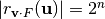.
Nonlinear cryptographic functions used in block ciphers should have no nonzero linear structures [Evertse:87]. The existence of nonzero linear structures, for the functions implemented in stream ciphers, is a potential risk that should also be avoided, despite the fact that such existence could not be used in attacks, so far.
Library¶
To obtain its representation as Autocorrelation Spectrum, the following method must be used:
void AC(NTL::mat_ZZ& R, VBF& F)
The method used to obtain the linear structures is the following:
void LS(NTL_SNS ostream& s, VBF& F)
Example¶
The following program finds out the Autocorrelation Spectrum of a Vector Boolean function together with its linear structures having as input its Truth Table.
#include <iostream>
#include <fstream>
#include "VBF.h"
int main(int argc, char *argv[])
{
using namespace VBFNS;
VBF F;
NTL::mat_GF2 T;
ifstream input(argv[1]);
if(!input) {
cerr << "Error opening " << argv[1] << endl;
return 0;
}
input >> T;
F.puttt(T);
input.close();
cout << "The Autocorrelation Spectrum is:" << endl;
cout << AC(F) << endl;
cout << endl << "The linear structures are: " << endl;
LS(cout,F);
return 0;
}
If we use as input of this program the Truth Table of NibbleSub, the output of the program would be the following:
The Autocorrelation Spectrum is:
[[16 16 16 16 16 16 16 16 16 16 16 16 16 16 16 16]
[16 0 0 0 0 0 -8 -8 -8 -8 -8 8 0 0 8 8]
[16 -8 0 -8 -8 0 0 8 8 -8 0 0 -8 8 -8 8]
[16 0 0 0 0 0 0 -16 -8 8 0 0 0 0 -8 8]
[16 0 -8 0 0 -16 0 8 0 8 -8 -8 -8 0 8 8]
[16 0 0 -8 0 0 0 -8 0 -8 8 -8 0 -8 8 8]
[16 -8 0 0 -8 0 -8 8 0 -8 0 0 8 0 -8 8]
[16 0 -8 0 0 0 0 -8 0 8 0 0 0 -8 -8 8]
[16 -8 -8 0 -8 0 0 8 -8 8 0 0 0 0 8 -8]
[16 0 0 8 0 0 0 -8 0 -8 0 0 -8 0 8 -8]
[16 8 0 0 8 0 8 8 -8 -8 0 -8 0 0 -8 -16]
[16 0 -8 -8 0 16 -8 -8 8 8 -8 -8 8 8 -8 -8]
[16 -8 8 -8 -8 0 -8 8 0 8 0 0 0 -8 8 -8]
[16 0 0 0 0 0 8 -8 0 -16 0 0 0 0 8 -8]
[16 8 0 8 8 0 0 8 0 -8 -8 0 0 -8 -16 -8]
[16 0 8 0 0 -16 0 -8 0 8 8 8 -8 0 -8 -8]
]
The linear structures are:
([0 0 1 1],[0 1 1 1])
([0 1 0 0],[0 1 0 1])
([1 0 1 0],[1 1 1 1])
([1 0 1 1],[0 1 0 1])
([1 1 0 1],[1 0 0 1])
([1 1 1 0],[1 1 1 0])
([1 1 1 1],[0 1 0 1])
We can notice that NibbleSub S-box has seven linear structures which are the following:
The figure represents the Autocorrelation Spectrum of NibbleSub and emphasizes in red the values corresponding these linear structures.